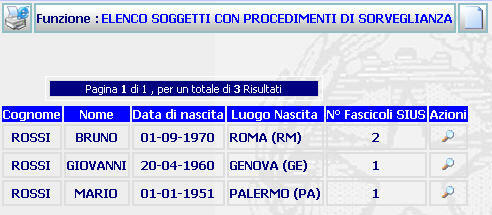
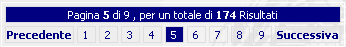

ELENCO SOGGETTI CON PROCEDIMENTO DI SORVEGLIANZA: La funzione consente di visualizzare l'elenco (maturato a seguito di una ricerca procedimento per soggetto) dei soggetti nei cui confronti risultino iscritti procedimenti di sorveglianza (con l'indicazione del numero dei procedimenti iscritti) e di accedere al dettaglio del procedimento (se risulti iscritto un solo fascicolo) ovvero all'elenco procedimenti per soggetto.
LE MASCHERE VIDEO
La funzione viene realizzata attraverso la maschera seguente in cui compare l'elenco dei soggetti con procedimenti di sorveglianza ed il numero di fascicoli SIUS iscritti a carico di ogni soggetto

COME FARE PER ...
| Per iscrivere un nuovo soggetto l'utente deve: |
selezionare il pulsante

compilare la maschera di inserimento soggetto
Confermare i dati inseriti nella maschera agendo sul bottone

| Per visualizzare i dati del procedimento SIUS l'utente deve: |
visualizzare i procedimenti sius a carico di un soggetto.Cliccare sul pulsante ; si aprirà la maschera di dettaglio del procedimento Sius ovvero l'elenco procedimenti per soggetto-attività di sportello che permette di
| Per visualizzare, se presente, un'altra pagina occorre:
|

PULSANTI
Oltre ai pulsanti
 e
e  , facenti entrambi parte del gruppo di
pulsanti di "Uso Comune è
presente il seguente pulsante:
, facenti entrambi parte del gruppo di
pulsanti di "Uso Comune è
presente il seguente pulsante:
|
PULSANTE |
DESCRIZIONE |
|
|
Questo pulsante ha lo scopo di visualizzare il dettaglio del procedimento sius |